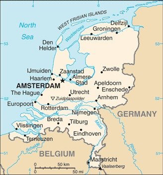

Genel Bilgiler
Hollanda, Batı Avrupa’da yer alan parlamenter bir anayasal monarşidir. Başkenti Amsterdam’dır, ancak hükümetin merkezi Lahey’de bulunur. Yaklaşık 17,5 milyon nüfusa sahiptir. Resmî dili Hollandaca’dır ve para birimi Euro’dur. Hollanda Avrupa Birliği ve NATO üyesidir ve uzun süredir denizcilik, ticaret ve tarım alanlarında önemli bir rol oynamaktadır.
Hollanda, kuzeyde Kuzey Denizi, doğuda Almanya, güneyde Belçika ile çevrilidir. Yüzölçümü yaklaşık 41.543 km²’dir. Ülkenin coğrafyası büyük ölçüde alçak ve deniz seviyesinin altındadır; çok sayıda kanal, nehir ve göl bulunur. Ülke topraklarının yaklaşık %26’sı denizden kazanılmış dolgu alanlardan oluşur.
Başkent: Amsterdam
Kıta: Avrupa
Yüzölçümü: 41.543 km²
Nüfus (2025): 17.600.000
Bayrak Anlamı: Hollanda bayrağı yatay üç eşit şeritten oluşur: kırmızı, beyaz ve mavi. Kırmızı cesareti, beyaz barışı ve saflığı, mavi ise sadakati ve ülkenin suyla olan bağını temsil eder. Bayrak 1937 yılında resmî olarak kabul edilmiştir ve Hollanda’nın ulusal sembolüdür.
Hollanda Haritası
Ekonomi
Hollanda ekonomisi yüksek gelirli, gelişmiş ve ihracata dayalıdır. Tarım sektörü verimli olup çiçekçilik, süt ürünleri ve sebze üretimi öne çıkar. Sanayi sektöründe kimya, elektronik, gıda işleme ve enerji alanları önemlidir. Hizmet sektörü özellikle finans, lojistik ve turizm alanlarında gelişmiştir. Hollanda, Avrupa’nın önemli liman ve ticaret merkezlerinden biri olan Rotterdam Limanı’na sahiptir.
| Yıl | İhracat (Milyar $) | İthalat (Milyar $) |
|---|---|---|
| 2019 | 605 | 580 |
| 2020 | 580 | 560 |
| 2021 | 620 | 600 |
| 2022 | 640 | 620 |
| 2023 | 645 | 625 |